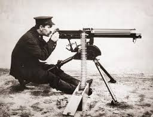

- Mitraliera – Arma simbol a Primului Război Mondial. Modelele Maxim, Vickers și Hotchkiss puteau trage sute de gloanțe pe minut, transformând câmpul de luptă într-un loc unde atacurile clasice cu infanterie deveneau sinucidere. A dus la apariția războiului de tranșee.
- Tancul – Britanicii au introdus primul tanc, „Mark I", la Somme în 1916. Era lent și nesigur, dar putea trece peste sârma ghimpată și tranșee. A devenit o armă esențială în următoarele decenii și a deschis o nouă eră în războiul terestru.
- Aviația militară – La început avioanele erau folosite doar pentru recunoaștere. Treptat au apărut avioane de vânătoare (Fokker, Sopwith Camel) și bombardiere. Războiul a transformat aviația dintr-o curiozitate într-o ramură militară de sine stătătoare.
- Submarinul (U-Boat) – Germania a folosit submarine pentru a ataca navele comerciale aliate. Tactica a fost atât de eficientă încât aproape a izolat Marea Britanie. A determinat și intrarea SUA în război, după scufundarea navei „Lusitania".
- Armele chimice – Gazele de luptă (clor, fosgen, iperită) au fost folosite pentru prima dată pe scară largă, mai ales la Ypres (1915). Au provocat suferințe enorme și au dus la apariția măștilor de gaze și, ulterior, la Convenția de la Geneva.
- Comunicațiile radio – Telegrafia fără fir s-a dezvoltat rapid pentru a coordona armatele și flotele. A fost și prima dată când spionajul electronic (interceptarea mesajelor) a jucat un rol decisiv – telegrama Zimmermann a accelerat intrarea SUA în război.
